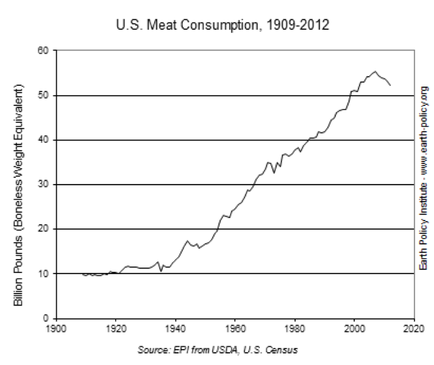

Soybean production in the U.S


Soybeans are highly monocroped in 15 states, including Iowa, Illinois, Indiana and Minnesota, since 2005. These 15 states in mid-east contribute to about 99% of the total national soybean production. Due to the optimal temperature and fertile soil, soybeans are massively produced in these areas. These midwestern states have deep, rich soils and relatively cool summer nights. North Carolina in comparison produces about one-tenth of the volume of soybeans produced in Iowa. Moreover, the soybean acreage has greatly increased from 1990 to 2005. USDA shows U.S. soybean plantings were at a record 83.701 million acres in 2014, 6.861 million more than planted in 2013 and 8.655 million more than planted in 2011 Although the production of soybean and planting acerage has dramatically increased sine 1990s (State of Illinoi yielded 10% more soybean in 2014 than in 2013), there is no significant field site change within the U.S since 1990.
Map of US Soy Production
Where are soybeans distributed and used in the U.S

It is estimated that more than 108,354,000 metric tons of soybean will be produced in 2015 in the U.S. 85% of the total soybean consumed in U.S is used for soybean meals and only 2% of them goes to humans’ plate. As the chart indicates, U.A. meat consumption increases from 40 billion pounds in 1990 to 55 billion pounds in 2010 (about 40% increase), which means soybean, as their primary meal, has to drastically increase to feed enough livestock. On the other hand, the amount of soybean consumed by humans is relatively stable in the past 20 years. Therefore, soybean production has increased since 1990s due to the fact that the purpose of soybean shifts from feeding people to feed animals.
Internationally geographic shift


While the production of soybeans in us is continuously increasing since 1990s, the percentage of US soybean production on a global scale is decreasing. Countries, such as Brazil and Argentina, start to take over the largest soybean producers. USDA show the data that more than 40 percent of the soybean is exported from the U.S and this number has increased from 40 percent in 2004 to 45 percent in 2015. China, as the biggest soybean importer of the U.S, plants relatively small amount of soybean domestically due to the soybean surplus in the U.S. In this case, soybean production shifts from domestic consumption to export due the urgent international soybean demand.
Distribution of Production
U.S. soybean production continues on an upward trend from the late 1900s to the present with production in 1980 as 49 million metric tons and production in 2013 as 89 million metric tons. Likewise, record highs in the harvested area and average yield per acre of soy have been established. The focus will be on geographic analysis of growth in soybean production. Geography plays a significant role in the production because the locale of production presents the environmental conditions necessary for the soy to grow. To assess the geography of soybean production, the localization of production and the beneficiaries of this growth are examined in the context of the modern food system.
Soybean production is localized in the Midwest region of the United States. The Midwest region is defined per U.S. Census Bureau as Illinois, Indiana, Iowa, Kansas, Michigan, Minnesota, Missouri, Nebraska, North Dakota, Ohio, South Dakota, and Wisconsin. The top soybean producing states from 2013-2015 have been Illinois, Iowa, Indiana, Minnesota, Nebraska, Missouri, Ohio, South Dakota, North Dakota, and Arkansas respectively. The soybean production in the U.S. in 2013 in 1,000 bushels was 3,357,984 and in 2014 was 3,968,823. The top soybean production states in the Midwest accounted for 72.5% in 2014 and for 72.9% in 2013. This begs the question: why has soybean production been highly concentrated in the Midwest region of the United States?
Two main aspects of the Midwest facilitate the concentration of soybean agriculture: namely soil and climate. The Midwest is characterized with one of the richest soils in the U.S. and a mild weather climate accompanying it. The mild weather is heavily influenced due to the proximity of the Great Lake Region to the Midwestern states, with many states in the Midwest bordering the Great Lakes. The Great Lakes region encompasses the U.S. states Illinois, Indiana, Michigan, Minnesota, New York, Ohio, Pennsylvania, and Wisconsin. As shown, six out of eight states in the Great Lake region are also in the Midwest region, and four out of the eight states are a part of the top soybean producing states. The Great Lakes function as heat sinks, which serve to moderate the temperature around the land encircling the Great Lakes by cooling the summer. The growing season for soy is generally late April to early May for planting soy and late September to the middle of November for harvesting soy. As such, the role of the Great Lakes as a heat sink complements the peak of the soy growing season, supplemented by the Great Lakes’ additional function as a humidifier continually increasing the moisture in the air. “Effects of Global Climate Change on Agriculture Great Lakes Region” by J.T. Ritchie, B.D. Baer, and T.Y. Chou utilizes two climate models Goddard Institute for Space Studies and Geophysical Fluid Dynamics Laboratory to assess yield and irrigation water demand under different weather scenarios focused on determining climate change effects on corn and soy production. The interpretation of the results indicate increases in temperature causes soy yield reduction because of decreased length of the growing season from shortened reproductive development period; with smaller temperature increases, the yield reduction would also decrease. Furthermore, the study reveals that climate change increases in temperature would shift the optimal harvested areas of soy production northward. Thus, the fertile soil of the Midwest region and the moderate temperature offer the conditions necessary for U.S. soy corporations to optimize their yield and continue to expand on that yield annually.
With increased expansion in the harvested acre and yield per acre of soy, it is necessary to understand who the beneficiaries are of this increase in production. Contrary to public opinion, the Agricultural Census in 2012 revealed the U.S. soy farming industry consisted of dominantly individual or family owned farms, which were 83% of the soy producing farms while 7% of soy producing farms were owned by corporations. Prominent players such as Monsanto and DuPont who are normally associated as dominant presences in the modern food system play a small portion in the soy farming industry with a 2.4% estimated market share for Monsanto and 1.0% estimated market share for DuPont. These two corporations act as genetically modified primary soybean seed suppliers. The Supply Industries for U.S. Soy Farming who benefit are the Fertilizer Manufacturers, Biotechnology Corporations, Crop Services, Farm Product Storage and Warehousing, and Farm Equipment Wholesaling. The major players within each industry were Agrium Inc. and The Mosaic Company under Fertilizer Manufacturers, Archer Daniels Midland Company and Cargill Inc. under Farm Product Storage and Warehousing, and Gilead Sciences and Amgen Inc. under Biotechnology. With the price of soybeans at $9.3575 per bushel and increased growth in the soybean industry, these supply industries are the first in lines to profit for increased soybean farming. Besides the domestic demand of soy for soybean meal and soybean oil, the U.S. soy producing farms stand to gain with the U.S. as the second largest soybean exporter, contributing to 33% of the world’s soybean exports in 2014. The export market consists of China as 63% of the market share, Mexico as 7%, and Indonesia as 4%. Overall, the supply industries for soybean farming, family-owned farms, corporation-owned farms, are the beneficiaries of increased soy production in the U.S. for the past years.
Soybean production is localized in the Midwest region of the United States. The Midwest region is defined per U.S. Census Bureau as Illinois, Indiana, Iowa, Kansas, Michigan, Minnesota, Missouri, Nebraska, North Dakota, Ohio, South Dakota, and Wisconsin. The top soybean producing states from 2013-2015 have been Illinois, Iowa, Indiana, Minnesota, Nebraska, Missouri, Ohio, South Dakota, North Dakota, and Arkansas respectively. The soybean production in the U.S. in 2013 in 1,000 bushels was 3,357,984 and in 2014 was 3,968,823. The top soybean production states in the Midwest accounted for 72.5% in 2014 and for 72.9% in 2013. This begs the question: why has soybean production been highly concentrated in the Midwest region of the United States?
Two main aspects of the Midwest facilitate the concentration of soybean agriculture: namely soil and climate. The Midwest is characterized with one of the richest soils in the U.S. and a mild weather climate accompanying it. The mild weather is heavily influenced due to the proximity of the Great Lake Region to the Midwestern states, with many states in the Midwest bordering the Great Lakes. The Great Lakes region encompasses the U.S. states Illinois, Indiana, Michigan, Minnesota, New York, Ohio, Pennsylvania, and Wisconsin. As shown, six out of eight states in the Great Lake region are also in the Midwest region, and four out of the eight states are a part of the top soybean producing states. The Great Lakes function as heat sinks, which serve to moderate the temperature around the land encircling the Great Lakes by cooling the summer. The growing season for soy is generally late April to early May for planting soy and late September to the middle of November for harvesting soy. As such, the role of the Great Lakes as a heat sink complements the peak of the soy growing season, supplemented by the Great Lakes’ additional function as a humidifier continually increasing the moisture in the air. “Effects of Global Climate Change on Agriculture Great Lakes Region” by J.T. Ritchie, B.D. Baer, and T.Y. Chou utilizes two climate models Goddard Institute for Space Studies and Geophysical Fluid Dynamics Laboratory to assess yield and irrigation water demand under different weather scenarios focused on determining climate change effects on corn and soy production. The interpretation of the results indicate increases in temperature causes soy yield reduction because of decreased length of the growing season from shortened reproductive development period; with smaller temperature increases, the yield reduction would also decrease. Furthermore, the study reveals that climate change increases in temperature would shift the optimal harvested areas of soy production northward. Thus, the fertile soil of the Midwest region and the moderate temperature offer the conditions necessary for U.S. soy corporations to optimize their yield and continue to expand on that yield annually.
With increased expansion in the harvested acre and yield per acre of soy, it is necessary to understand who the beneficiaries are of this increase in production. Contrary to public opinion, the Agricultural Census in 2012 revealed the U.S. soy farming industry consisted of dominantly individual or family owned farms, which were 83% of the soy producing farms while 7% of soy producing farms were owned by corporations. Prominent players such as Monsanto and DuPont who are normally associated as dominant presences in the modern food system play a small portion in the soy farming industry with a 2.4% estimated market share for Monsanto and 1.0% estimated market share for DuPont. These two corporations act as genetically modified primary soybean seed suppliers. The Supply Industries for U.S. Soy Farming who benefit are the Fertilizer Manufacturers, Biotechnology Corporations, Crop Services, Farm Product Storage and Warehousing, and Farm Equipment Wholesaling. The major players within each industry were Agrium Inc. and The Mosaic Company under Fertilizer Manufacturers, Archer Daniels Midland Company and Cargill Inc. under Farm Product Storage and Warehousing, and Gilead Sciences and Amgen Inc. under Biotechnology. With the price of soybeans at $9.3575 per bushel and increased growth in the soybean industry, these supply industries are the first in lines to profit for increased soybean farming. Besides the domestic demand of soy for soybean meal and soybean oil, the U.S. soy producing farms stand to gain with the U.S. as the second largest soybean exporter, contributing to 33% of the world’s soybean exports in 2014. The export market consists of China as 63% of the market share, Mexico as 7%, and Indonesia as 4%. Overall, the supply industries for soybean farming, family-owned farms, corporation-owned farms, are the beneficiaries of increased soy production in the U.S. for the past years.